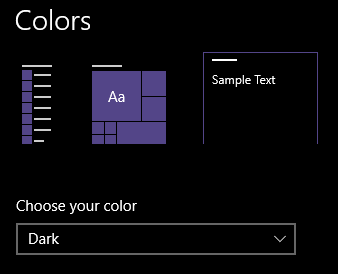
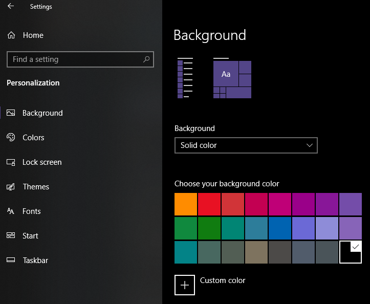
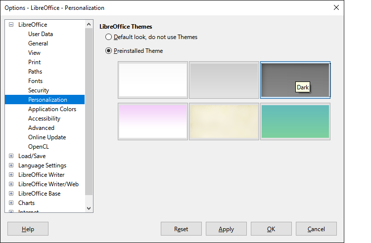
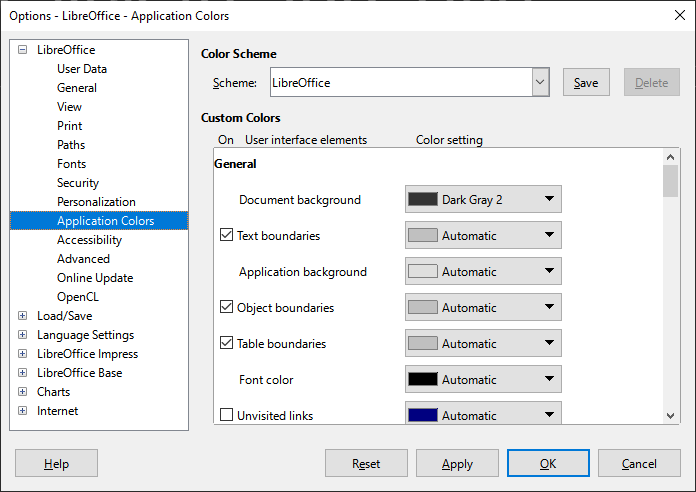
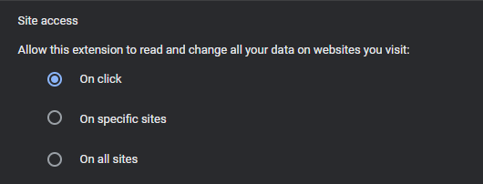
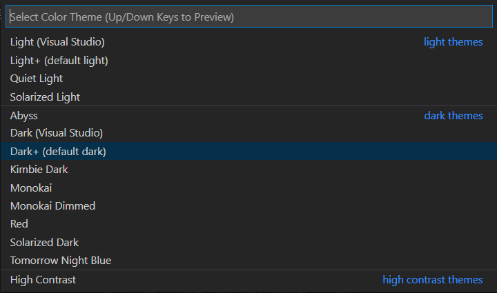
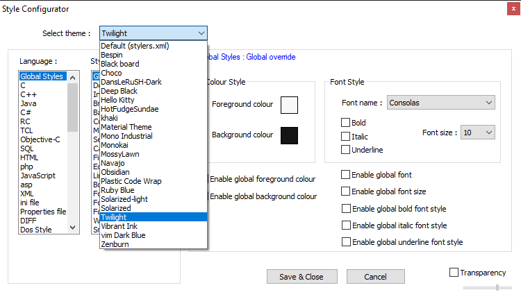
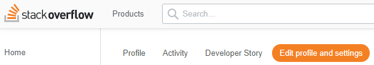
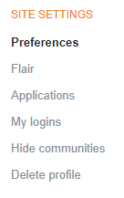
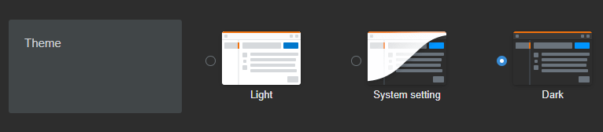

Going Dark
A Journey To Enlightenment About Dark Mode Features
Everywhere I look, I notice that things have been getting better. While I'm whistling in the dark about seeing the light at the end of the tunnel, you might wonder if I've gone to the dark side of the moon. I'm only talking about dark mode features which have become prevalent in recent years in applications I use at home and work.
Here is a list of dark mode settings I use that might be enlightening.
Windows System-Wide Dark Mode
With Windows 10, click Start, then Settings, Personalization, and Colors. From the "Choose your color" pull-down menu, you can choose Light, Dark, or Custom. Select Dark and you're good to go!

I hate distractions from background pictures and prefer a solid black background color. You can get to these Windows Settings from Start, Settings, Personalization, and Background.

Windows Office Applications
The Windows dark theme applies to each application's boundary, such as its frame and menu. However, most of the surface of each application can still cause you to be blinded by the light. Here are some Windows applications I use at work where a dark theme is possible:
-
Microsoft Outlook: Select File, then Office Account. The Office Theme pull-down menu lets you pick "Black".
-
Microsoft Teams: Click on your profile picture and select Settings. Then select the General settings on the left-side menu. "Dark" is one of the available themes.
-
Microsoft Word: When editing or reading any Word document, I type "page color" into the search bar at the top. A "Page Color" menu appears from which I can pick a background color for the page. Set the page color back to "No Color" before printing.
-
Microsoft Excel: Create a rectangle with a dark background with Paint or another simple drawing program and save it somewhere. I used a gray background and saved the file as "gray.png". With an Excel file open, select the Page Layout menu, and click on Background. Set the "gray.png" as a background. Before printing, go to Page Layout again and choose "Delete Background". This does not delete "gray.png", so you can reuse the file.
Before you make light of this approach, keep in mind that it is more than just a shot in the dark - it works. A small price to pay for your dark (mode) days ahead.
Libre Office
At home (on my Windows PC), I often use LibreOffice Calc, Writer, and Impress, which are the equivalents of Microsoft's Excel, Word, and PowerPoint, respectively. To set the Dark theme, open any LibreOffice application, and select Tools, Options, and Personalization. Then click on the "plus" by the LibreOffice setting. Use the "Preinstalled Theme" called "Dark".

Next, select Application Colors as shown below and set the Document background. I've picked Dark gray 2 as I didn't like the total black.

With LibreOffice, these settings apply across all the applications. No need to tinker with each LibreOffice application individually unlike the Microsoft products.
LibreOffice, a free and open source application suite, is indeed the dark horse of dark mode settings. It beats the expensive Microsoft Office suite hands down.
Chrome Browser and Dark Reader Extension
With the Chrome browser, I use the Dark Reader extension, which renders pages with a pleasant dark theme that is also configurable. The extension can access everything you're viewing, including passwords you type. If malicious code somehow penetrated that extension, it could transmit your passwords somewhere undesirable. With Chrome's extension settings, you can configure Dark Reader to only be active on click as shown below.

Perform this somewhat cumbersome click operation only once to enable dark mode for a site. Click on the Dark Reader extension icon and reload the window as prompted. After that, future access to the site will automatically be in dark mode.
Live with screaming bright whites of financial institution sites if you're paranoid about the extension. Don't think about your browser and operating system's ability to access all your information. Go find some alternate facts to believe in and find outer peace. Wear your shades of gray.
Visual Studio Code
Use Ctrl-Shift-P and search for "theme". Choose "Preferences: Color Theme". And pick one of the dark themes.

If you like to hurt yourself, try "Solarized Light".
Notepad++
You can't beat the Notepad++ editor for its sheer speed (relative to bulkier editors such as VSCode). While I rely on VSCode for coding, I prefer Notepad++ for a quick look at files, and minor changes under Windows. Notepad++ comes with multiple themes pre-installed. Go to the Settings menu, select Style Configurator, and you'll see the various themes available from the theme pull-down menu shown below.

Pick a theme and then click the Save & Close button. There are many dark themes to choose from, including Twilight, Deep Black, and Obsidian. Stay away from Hello Kitty. Don't take a leap in the dark with that theme.
I also installed the excellent Material Theme in my setup.
StackOverflow
If you code, then you probably use StackOverflow often. But did you know that the site supports a dark theme? Before you grayout searching for the answer on StackOverflow itself, here's the answer.
Log into StackOverflow. Click on your profile picture/icon and select "Edit profile and settings" near the top, just below the search box.

Click on Preferences under Site Settings.

You'll discover the Dark theme option there. The "System setting" option also seems to work under Windows if you already have your Windows theme set as explained earlier.

Writing Applications Of The Dark Ages
If you use any of these applications, you still have dark days ahead of you.
I had an old copy of Scrivener for Windows and was looking to upgrade. But Scrivener for Windows does not support dark mode right now. It's unclear if the upcoming Scrivener 3, which is behind schedule, will.
The desktop versions of Grammarly and ProWritingAid do not support dark mode either. One could use a dark mode extension with the browser versions of these applications. However, I don't like to use the browser for writing or editing unless I'm on a Chromebook.
Dark mode is an expensive feature to add. It takes a lot of work and time to develop algorithms that can change all the pixels in between every character. Filling the holes in characters such as "A" and "O" is especially tricky. Speedy rendering is yet another challenge. I can't fathom how complex the test cases must be for validating a dark mode feature. (Sarcasm alert, in case you're starting to believe anything in this paragraph.)
One More For The Digital Abyss
I'm glad I could shine the light on this topic and prevent you from needlessly grasping in the dark. Dark mode is a sight for sore eyes. I guess I better go dark now before you take a completely dim view of my attempts to light a fire under you about dark mode settings.
Comments
Comments powered by Disqus